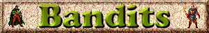

by Terror's Martyr
Here, I have organized many hints to the game, so that you might have an easier time with some of the battles. It also helps with covering a few sidequests, though not all nooks and crannies are revealed.
Main Quest:
Where is the Bandit Lair?
What do I do in the small temple?
Dear lord, these Trophies are tough!
Why do I fall through the floor, when trying to reach the leaders?
Ah! This ambush is killing me!
Where do I find Marx's Lair?
I keep getting killed, in the final battle!
Sidequests:
How do I get into the Lumber Camp?
Where do I go, in the Lumber Camp?
What is that wierd, basalt hut south of Birmington, and why won't the runes let me in?
How do I find Leningrad?
What do I do in that odd hut to the southeast of Birmington, with the crystal guardians?
What do I do with the large pentagram?
What is there to do in the warm cave, south of Birmington?
Answers:
- The bandit lair is to the southeastern corner of the valley Birmington is in. It is hidden, and will stay that way, until you talk to Mayor Pinochet.
- The small temple is actually quite evil- it is an illusion, by a Rakshasa. If you attempt to sleep in the bed, you will be devoured. If you eat the stew, the searing acids will destroy your stomach. Praying to the altar heals you, but at the same time, reduces your intelligence by 1. Rather, destroy the altar. You are now trapped, and must fight the Rakshasa. However, a portcullis opened in a secret passage to the north, and you may now rest in the bed.
- Haste and bless yourself, before this fight! When you do, many spells become valuable, like Charm Foe, Fireball or Wound. They only have 30 HP, so good luck!
- You fall through, because it's a trap! If you fell through the trap, then fight through to the room in the north. If you take the stairs, then head north and west to the same location. From there, head west, and fight a few brigands in a bedroom. Go south into the hallway, and west. A mage will summon some aid, and fight you. Search the walls by the potted plant, and pull the lever at the end of that passage.
- The ambush is difficult. Summoning and field spells help, here. Either way, fleeing is an option. But killing the mage helps!
- Marx's Lair is north of Birmington, in a cave. Speak to Pinochet, and he will reveal it to you.
- The final battle is difficult. Killing Lenin helps, as does doing other quests. If you met Pinochet's son and wife before the final battle, then it becomes infinitely easier, on the last phase. Sleep Cloud helps.
- There's a blasted area in the northeastern corner, which hasn't been sealed up. From there, head west to the Mess Hall. As you enter, the leader will flee. Head south, and he'll be in the meeting room.
- The runes will not let you in, until the first encounter with Marx and his henchmen.
- To find Leningrad, enter the hut south of Birmington. Enter the room in the center, and slay Lenin. From there, go to the library in the northwestern corner. There's a hidden passage on the western wall of the northernmost row, which has a key inside. Take it, and open the secret passage on the southern wall, in the northeastern room. Beyond the secret passage is Lenin's bedroom. Read what's in his dresser, and then enter the southeastern room, and check the table. Enter the southwestern room, and place the key in the hidden spot of the pedestal. Leningrad will appear.
- There is various treasure here, and just a bunch of miscellaneous rooms. In the center is a pentagram, which will activate a portal, if you figure it out. There is also an artifact in here.
- There's already a Wand of Binding on each of the surrounding runes, save one. The Rakshasa in the bandit lair drops the final Wand of Binding upon death. If you have it, place it on the last rune, and a portal will appear, to a mysterious and hidden place...
- In the warm cave, there are two small skirmishes in a tunnel, and then there is a final fight with a Drake in an evil temple. This fight should be extremely easy. Put the Drake to sleep, and cut it down. There is a secret passage in the northeastern corner with some look. You will also get a 'Drakeskin' special item. The blacksmith in town will convert these into fire-resistant Drakeskin Pants, for a minimal fee.
Walkthrough
Getting Started
You will start in the small town of Birmington. Enter the city hall, and Mayor Pinochet will tell you to search out a Bandit lair to the southeast. While you're in city hall, talk to Manny and Elizabeth, for a while. This is the one far to the southeast. If you are in an adobe hut, then you are in the right place. From here, enter the temple, on the west side. Oddly enough, it seems like a quaint place. Do not eat the stew, take a nap, or pray to the altar. Try to destroy the altar, and you will discover the 'quaint' little altar is actually a decrepit, evil shrine, ran by a Rakshasa. Kill the Rakshasa, and search for a secret passage at 19,28 and another at 16,26. The portcullis have opened. Follow the passage into an enclosed room, filled with trophies. Look at one, and prepare for an extremely difficult combat. When you are through, run through the door on the eastern wall. Disarm the three traps. The third isn't a trap you have to disarm- but no matter what, a wall will open, revealing a Spectre. Slay it, and then brigands will reveal themselves to you, a few more paces down the hallway. Slay them, and rather than trying to enter the meeting hall, go east into the brigand chambers. If you are so inclined, there is a loot room here. The chest itself will blow up in your face, but a stairway will be revealed in its place. Climb down it, and you'll find some loot. Go back to the first floor. There is a stairway at 35,32. Climb down it, and go through the passage north, and west. There are a few brigands here, slay them. Go through the door on the south wall, and down the passage, west. A mage there will summon a few ogres. Slay them, and search the secret passage at 5,12. Follow that passage, and the walls will slam into you, and dissapear, revealing a few Cave Rats. It's still an easy fight, but make sure one doesn't kill you when you only have 0HP remaining. Pull the lever to the south, and go back upstairs, and back to where the Meeting Hall is. The floor will not fall through. Enter the room, and you will find your first encounter with Marx.
Marx and You
In this battle, all three of Marx's henchmen will attack you. Marx himself will teleport out. But don't worry about slaying all three of the henchmen- when you slay one, the rest teleport out. This is good, because you will need all of the strength you can muster. Enter the portal, and you will be ambushed. I suggest you flee, unless you summon many creatures, or have decent bruisers. It's a difficult fight. From there, return to Birmington. The first thing you will notice is that Marx has unleashed an Ursag onto the city! Help the guards ward it off. When it is slain, Marx will teleport into Pinochet's library! Run into the city hall, and Marx will set City Hall on fire! You will find yourself lying in the inn. Go to where City Hall used to be, and Pinochet will be quiet and solemn. He will tell you where to find Marx. Go north, and into Marx's lair. Or whatever it is. Investigate the house. In the eastern bedroom, search the dresser. The other two encounters are indicated by white dots. After that, the northernmost door will unlock, revealing a small, underground river, and a boat. Take the boat east, and prepare for the final fight...
The Finale
Row the boat onto the small strip of land, and follow it forward. If you have Leningrad, it will ignite in flames, now. This weapon is now extremely powerful! Enter the small opening at the end, and Engels will teleport in. If you slew Lenin, then Putin will join you. If Lenin is still alive, Putin will teleport in, but Lenin will kill him. When both Lenin and Engels are dead, Marx teleports in. If you met his wife and son, he will give you an option to join him or not. If you did not meet either, you must fight Marx. If you join Marx, then Pinochet teleports in. He also knows that you are allied to Marx. Marx and you (and possibly Putin, if he is still alive) will then fight Pinochet. After Pinochet is dead, Marx will reunite with his son, and give you 500 gold, as well as a protection amulet. If you did not join Marx, Pinochet teleports in, when you kill Marx. Pinochet gives you 1000 gold. Congratulations, you beat Bandits!
Artifacts
There are many artifacts in Bandits. I have listed all of them here, with which town they're in, their coordinates, and what they're guarded by.
- Flaming Rapier
- Birmington- 28,36
Guarded by: (see Lumber Camp)
- Symbiosis Robes
- Isolated Hut- 17,26
Guarded by: Rakshasa
- Obsidian Wave Blade
- Moist Cave- 27,18
Guarded by: Poison Fungi x8
- Asp
- ? ? ?
- Olindbar Amulet
- ? ? ?
- Leningrad
- Strange Hut- 8,20
Guarded by: (see Leningrad)
- Drakeskin Pants
- Steamy Cave- 15,13
Guarded by: (see Drakeskin Pants)
- Doctor's Robes
- Ornate Hut- 24,17
Guarded by: Power Crystal
- Diamond Gavel
- Lumber Camp- 13,31
Guarded by: Mage, Accolyte, Archer, Brigand, Faestro
- Rawhide Armor
- Lumber Camp- 13,31
Guarded by: Mage, Accolyte, Archer, Brigand, Faestro
Credits
I would like to thank my beta-testers, who helped me root out the errors from my scenario, and would like to thank profusely:
- iambobsushi
- Black Squirrel
- The Creator
Zeeqon
I would like to thank the graphical artists, of who's work I used:
- Relhan-
- Tim Hunter
- Ursag
- Shrubbery
- Small Trees
- Logs
- Rakshasa
- Drake
- Icabod
- Tim Farland
Luz Piazuelo
- Manny Dialogue
Elizabeth Dialogue
- Pinochet Dialogue
- Icabod Dialogue
- Robinson Dialogue
- Imperial Banner
- Thuryl
- Haneda Yoshoyuki
I did the Fagen Dialogue, Petty Dialogue, Richie Dialogue, Trophy, Leningrad and Hut on Hills myself. Feel free to use them, but give me credit.
Contact Me!
Do you need help, in a specific area? Do you (and I hope you do) have any criticisms or comments on my scenario? I'd love to hear what you have to say. You may contact me by the following means:
Spiderweb Software Boards
The Lyceum
AOL Instant Messanger:
- TerrorsMartyr
- Kleptonoceros
Microsoft Instant Messanger:
- terrorsmartyr@hotmail.com
Email:
- terrorsmartyr@wi.rr.com
And as always, have fun!
- -Terror's Martyr